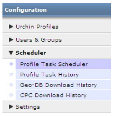

使用任务调度程序
概述
任务调度程序是 Urchin 的控制中心，负责所有配置文件的 Urchin 日志处理事件的实际调度和执行。 通过此调度程序，您可以立即运行任务，也可以将任务添加到 Urchin 事件列表，以便根据需要，按照几乎任意时间间隔重复运行相应任务。
任务调度程序的使用方法
- 登录到 Urchin 6 并点击“配置”（界面右上方）。
- 查找要调度的配置文件，然后点击“修改”。
- 点击“运行/调度”标签。
- 在“任务设置”下，选择所需的间隔。 建议使用“每天”。
- 为任务设置具体的时间。
- 点击“更新”保存更改。
- 要立即运行此任务，点击“立即运行”。 后续的调度任务将根据您所设置的日程表运行。

建议
- 大多数任务应安排每天执行，因为许多网络服务器安排每天进行日志轮换。 不过，由于 Urchin 的日志跟踪功能可以多次读取同一日志，避免使数据出现重复，因此并不是一定要将此间隔时间设置为每天。
调度程序运行说明
- Urchin 按顺序处理所有任务，因此即使是指定在同一时间执行的多个任务，也将按照一次仅处理一项任务的原则执行。
- 要查看已执行的所有任务的结果，请在左侧的导航栏中查看调度程序的“任务历史记录”。

“调度程序”部分：
- 配置文件任务调度程序：此页面用于显示为配置中的各个配置文件安排的任务。 每个配置文件均显示若干条详细信息，包括配置文件名称、运行频率、运行状态（未计划、待定、已加入队列、正在运行）。对于正在运行的任务，还会显示已完成百分比和开始时间。
- 配置文件任务历史记录：此页面用于列出通过配置文件任务调度程序或“立即运行”按钮执行的各项任务的历史记录。 列出的任务摘要可提供关于各项任务的有用信息。 点击“状态”字段可查看此历史任务的运行时细节。
地理数据库下载历史记录 (Urchin 6.500+)：以前称为“地理更新”(geo-update)，此部分属于配置文件任务调度程序。 作为调度程序的一部分，它显示通过配置文件任务调度程序执行的每次地理数据库下载情况。 其中列出了下载摘要，提供有关每次下载的有用信息。 点击“状态”字段可查看此历史任务的运行时细节。 通过“设置”->“全局设置”->“地理数据更新”部分可以安排地理数据库的下载； 另外，您也可以通过“设置”->“全局设置”->“CPC 来源更新”部分修改 CPC 调度程序。
CPC 下载历史记录 (Urchin 6.500+)：此页面用于列出通过 CPC 任务调度程序执行的各项 CPC 下载任务的历史记录。 其中列出了 CPC 下载摘要，提供了有关各次下载的有用信息。 点击“状态”字段可查看此历史任务的运行时细节。 您可以通过两种方式来安排下载 CPC 来源：通过“CPC 来源管理器”视图（“CPC 来源管理器”->“下载”或“修改”->“调度”标签 -> 选择下载日程），或点击“立即下载”按钮强制下载。